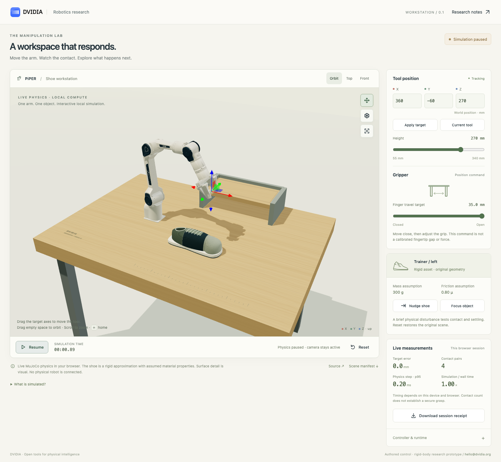

Live browser-native simulation with authored control and separate benchmark evidence
Live PiPER shoe workstation v0.1
Live browser physics · 14/16 targets · strict contact parity failed · shoe lifting unqualified
Abstract
A six-axis PiPER and its coupled gripper respond to user targets while MuJoCo runs locally in a browser worker. The final native run retains 20 valid attempts: 14/16 target trials pass, both high-target repeats fail, and jaw, impulse, disabled-table and 600-second hold checks pass. A ten-minute headless Chromium run reports 51.389 render calls per second and a 0.9999795 simulation/wall-time ratio on the tested Apple M5 host; simulated movement response is 61.9 ms p95 across 61 commands. Render calls do not measure GPU presentation. Native/WASM numerical and loaded-contact-count checks pass, while strict raw contact counts differ in 13/1,500 states. All fifteen development shoe-lift attempts fail. Complete development, failure and timing records remain separate. This authored rigid-shoe environment establishes no learned skill, calibrated material model or physical robot qualification.
In this paper
DVIDIA research · 13 October 2026 · Live workstation v0.1
The PiPER arm now responds to tool targets while MuJoCo runs locally in the browser. Drag the target, enter coordinates, adjust the native gripper, or nudge a free shoe and watch it settle. A fixed tabletop and rack give the interaction a visible physical setting. Live target error, contact observations and computation timing expose what the simulation is doing.
Open the live workstation · Open it on Hugging Face · Source and complete evidence
This is an authored controller operating a native simulated arm. It uses the original catalog's rigid trainer and the pinned PiPER mechanics. Retained shoe lifting remains unqualified: all fifteen development grasp attempts failed. No trained shoe policy or physical robot connection is included.

Desktop functional acceptance capture of the release with the official DVIDIA masthead. The rendered shoe detail is visual styling over the declared rigid collision proxy. Earlier benchmark screenshots retain their historical masthead.
What you can do
Move a colored target axis, type X/Y/Z coordinates in millimeters, or use the height control. The arm solves for a fixed tool orientation and follows with native position actuators. The tool's measured error remains visible when it cannot reach a requested point. The allowed command box bounds inputs; it does not establish that every point is reachable at that orientation.
The gripper control requests 0–35 mm of travel for one side of the coupled mechanism. That quantity is an actuator position, not a calibrated fingertip separation or force. Actual finger travel and native contact observations are available in the diagnostics. Contact count or aggregate normal force alone cannot establish a secure grasp.
The nudge button applies a declared 0.12 N·s impulse to the shoe for one 2 ms physics tick. The shoe's subsequent movement comes from free-body dynamics, gravity and contact. There is no shoe weld or hidden carrying force. Pause and reset let users inspect a state or restore the declared starting conditions. Orbit views and collision-geometry inspection expose the native shapes beneath the visual styling.
A downloadable session receipt records a bounded recent history with runtime measurements and disclosed resets or dropped samples. It is a browser-session diagnostic, rather than a complete training episode or an independently qualified skill.
Three clocks, one native scene
| Component | Declared cadence | Responsibility |
|---|---|---|
| MuJoCo physics | 2 ms simulated step, 500 Hz | Native articulated dynamics, free shoe, gravity and contacts |
| Authored controller | 20 ms simulated interval, 50 Hz | Differential inverse kinematics and bounded joint/jaw position targets |
| Browser state publication | Up to 60 Hz | Send current body transforms and diagnostics from worker to interface; only one request is outstanding |
| Rendering | Browser animation frames | Display the latest received native state and local visual detail |
These are distinct clocks. A 500 Hz integration rate does not mean that a physical camera-to-actuator loop has a measured 2 ms delay. The worker bounds catch-up work and reports lag when the browser cannot keep pace. Hidden tabs pause; returning requires explicit resume. Rendering and UI activity do not change the configured native timestep.
The native Python benchmark and browser worker load the same exported scene XML and pinned mesh bytes. Native compilation is canonicalized through that XML before benchmarking, so both engines receive the same serialized collision geometry. A damped differential-IK controller maintains one declared tool orientation while approaching a position target. It limits joint-command increments, joint slew and gripper slew; the upstream servo gains, force limits, joint mechanics, mass and inertia remain intact. The initial home pose is solved during reset. Target interaction subsequently advances native dynamics through actuators.
This implementation is a small CPU controller with direct access to simulator state. No large language model, neural world model, remote inference service or learned motion weights are on the control path. It supplies a measurable environment in which a future compact skill policy can be compared with the authored controller.
A visible shoe, with explicit physical assumptions
The workstation starts with one original MIT trainer-left asset: a 300 g rigid proxy built from primitive collision pieces. Its dimensions, mass distribution, friction and solver parameters are authored assumptions inherited from the immutable asset catalog. No real shoe or gripper pad was calibrated for this scene.
The native PiPER meshes and collision shapes come from the pinned upstream model. The table, rack and floor have physical geometry. Procedural material styling and shoe details improve readability; visual shoelaces and surface features do not add cloth, flexible uppers or deformation physics. A more realistic appearance is not a contact-calibration result.
The earlier asset library continues to supply all six shoe proxies and recorded scenes for three arms. This live workstation narrows the interaction to one arm and one shoe so that tracking, contact, controller behavior and browser performance can be inspected together. The rigid-block PiPER placement results remain separate from shoe competence.
Development kept both improvements and failures
Before the frozen run, one development target compared four controller error/increment caps while preserving the original native actuators. The baseline took 4.74 simulated seconds to first complete a 200 ms dwell within 5 mm and 3°. The selected threefold caps took 1.24 seconds. The twofold and fourfold variants took 1.64 and 1.32 seconds. All four trajectories remain in the development evidence. This is one tuning case, not a general speedup estimate.
A broader development comparison used two deterministic resets for eight target positions. The original caps met the final 5 mm/3° target criterion in 10/16 attempts; the selected caps met it in 14/16. Both repeats of the high target still failed. These exploratory runs preceded the final canonical-XML and benchmark-scoring revisions. Their attempt records and any invalid diagnostic attempts remain available; they are not the final confirmation result.
Fifteen approach–close–lift trials varied the shoe grasp location. 0/15 achieved retained lift. Two candidates briefly produced bilateral contacts, which did not become successful lifting. The complete development traces retain these failures. The native position servo, attainable gripping force and shoe geometry are plausible constraints to investigate; the experiments do not isolate one proven failure cause. We did not lower shoe mass, increase friction, alter native gains or introduce an attachment to turn those failures into an apparent success.
Frozen tracking and mechanics benchmark
The frozen protocol contains 20 attempts: eight tool targets with two resets each, plus jaw close/open travel, an explicit shoe impulse, disabled-table gravity and a 600 simulated second hold. Each target attempt has a four-second deadline and requires both position error at most 5 mm and orientation error at most 3°. Numerical validity, bounded controls and completed simulation duration remain necessary for any success. The two resets are deterministic repetitions, not independent real-world reliability trials.
| Final recorded check | Result |
|---|---|
| Target tracking, 5 mm and 3° at four seconds | 14/16 pass |
| Numerical validity and completed duration | 20/20 valid |
| Jaw close/open travel | Pass; final travel approximately 35 mm |
| Declared shoe nudge | Pass; peak displacement 11.232 mm |
| Disabled-table gravity control | Pass; shoe falls to the floor at approximately −0.8 m |
| Continuous native hold | Pass over 600 simulated seconds |
All attempts keep bounded actuator commands and emit no recorded native warnings. No loaded moving-arm/environment contacts appear in the control-interval checks. This observation does not rule out shorter transients or establish collision avoidance.
Both repeats of the high target [0.36, -0.06, 0.32] m fail with 31.439 mm final position error and 9.411° orientation error. These attempts remain in the tracking denominator. The interface also reports “Target not reached” for that request. Reaching every point inside the command box with the fixed orientation is not established.
Every planned attempt, failure and raw control-interval duration is retained. Native trajectories sample qpos, commands, body poses and loaded contacts every 20 ms, or every 100 ms during the long hold. These records cannot rule out brief contacts between samples. The benchmark evaluates target tracking and free-object mechanics; it does not score a shoe-organizing task.
The independent disabled-table condition tests whether the free shoe falls when its support is removed. The nudge condition checks physical response to the declared disturbance. Successful jaw travel checks actuation; it does not qualify a grip. A stable hold checks that one native state remains numerically usable over the declared horizon, rather than establishing collision avoidance or hardware safety.
Compare native and browser execution explicitly
Parity evaluation has separate outcomes for state differences, loaded contact observations and strict raw contact counts. It uses the same initial state and a fixed sequence of targets, jaw commands and a nudge.
Earlier development ran 15,000 native steps, covering 30 simulated seconds and 1,500 sampled states. Its raw contact counts differed in 11/1,500 samples despite near-identical state trajectories. A subsequent development sequence added jaw commands between controller boundaries and recorded 13/1,500 raw-count differences, with matching counts for contacts above the declared 0.001 N loading threshold. The strict raw-contact check did not pass. Small state errors and matching loaded-contact counts must not be summarized as exact contact parity.
The final native/WASM comparison completes all 15,000 steps and compares 1,500 states, including jaw commands between controller boundaries. Numerical state tolerances pass: maximum TCP coordinate difference is 4.623 × 10⁻¹⁴ m. Loaded-contact counts above 0.001 N agree in every sampled state. Strict raw-contact-count parity fails in 13/1,500 states; the largest differing subthreshold contact force is 4.4332 × 10⁻¹⁰ N. No solver warning occurs.
The run status retains the parity command's exit code 1. It is a narrow failure of strict contact-count equality, even though numerical trajectories and loaded-contact counts pass their separate checks. This headless WASM comparison runs under Node.js; it is separate from the browser rendering and interaction measurement below.
The final receipt preserves all comparison fields and the exact source revisions. Agreement between two implementations of the same simulated scene would still leave physical material accuracy and real robot response unmeasured.
Performance, installation and offline use
Physics runs on the CPU. Rendering requires WebGL2; JavaScript, WebAssembly and DecompressionStream must be available. There is no CUDA training dependency or large model download. A universal minimum CPU or RAM requirement has not been established across devices.
The final native run records 33,700 control intervals on a shared macOS arm64 host with ten logical CPUs. Interval computation measures 0.419542 ms median, 0.635794 ms p95, 0.777229 ms p99 and 72.760875 ms maximum. 2/33,700 intervals exceed 20 ms. The complete recorded benchmark takes 21.9694 wall seconds, including model construction and intermediate attempt serialization; process startup and the final report write are outside that duration. Peak process RSS is 1,071,169,536 bytes, which is not a minimum-memory specification. The two timing overruns prevent interpreting a small p95 as a hard real-time bound.
The final browser receipt measures a 600.0063-second wall-time run with 599.994 simulated seconds, a 0.9999795 simulation/wall-time ratio, no added lag and no reported solver or browser errors. The run remains browser-visible throughout and issues sixty cyclic targets during the ten-minute interval. This is a headless Chromium 151.0.7922.34 run at 1440×1080, device scale factor 1, on an Apple M5 with ten logical CPUs and 24 GiB RAM. WebGL reports ANGLE Metal Renderer: Apple M5; the receipt does not independently establish the rendering driver's hardware backing.
| Browser measurement | Observed result | Meaning |
|---|---|---|
| Three.js render invocations | 51.389/s | Render-call cadence; GPU presentation completion is not measured |
| Animation-frame callbacks | 59.999/s | Browser scheduling cadence |
| Received worker states | 51.569/s | New native-state deliveries |
| Target echo latency | 20.6 ms p95, 46.5 ms maximum | Command post to first received target echo |
| Simulated movement response | 61.9 ms p95, 70.7 ms maximum | Command post to first received TCP movement of at least 1 mm toward the target |
| Load to ready | 9.216 s | This local HTTP session's startup observation |
All 61 eligible target commands have a measured movement response; none is missing. Each starts from a stable recent TCP baseline and requests more than 5 mm of movement. These response times measure the instrumented simulated interface, not final target settling, physical sensing or a hardware actuator. The measured render-call cadence meets the declared 30–60/s target on this one host. The live session receipt retains its most recent 3,000 samples and reports 2,406 dropped older samples; the separate harness retains the measurement samples and reports no harness drops.
Native control-interval timing includes differential IK, ten physics steps, forward kinematics and diagnostic extraction. It excludes browser rendering, network activity, sensing and real actuation. Browser measurements must identify their browser and rendering backend; a software-rendered test cannot be described as hardware GPU throughput. Timing tails and missed 20 ms intervals remain visible with the medians.
The original benchmarked live-workstation export contains 99 files totaling 48,281,487 bytes. Initial package installation, separately retained benchmark evidence and the source asset cache require additional storage.
The exported folder contains all scene XML, pinned meshes, runtime JavaScript, MuJoCo WASM, compiled renderer geometry, catalog and license notices. Provision the package and assets once, then serve that folder locally for offline sessions. Keep its files together; opening only the HTML from a filesystem URL is not the supported serving path.
The delivery installation guide includes setup, runtime rebuilding and benchmark commands. With the versioned package and PiPER assets provisioned:
dvidia-workstation --assets ./robot-assets --output ./live-workstation
python -m http.server 8000 --bind 127.0.0.1 --directory ./live-workstation
The output inventory and pinned upstream hashes can be checked locally:
python -c "from dvidia_training.workstation import inspect_export; print(inspect_export('./live-workstation')['file_count'])"
dvidia-workstation-benchmark --assets ./robot-assets --source-commit 0c371381dbbf3a03d9d659680289ad45797e4935 --output ./workstation-benchmark
These commands use the current delivery and branding revision. Reproducing the original source-bound benchmark receipts requires checking out their original 79ffdda1c0759bce1201ce3391c40403c385c39b revision.
inspect_export checks bounded local files, original upstream notices and meshes, canonical native state, renderer geometry and hashes. It rejects external XML imports, unknown file paths and symlinks. It checks artifact consistency; recomputing a seal does not authenticate its publisher.
Public cold-start follow-up
The initial public-deployment observations exposed a startup problem that the local benchmark did not measure. Research-site checks did not reach native-ready within either a 120-second allowance or an extended 600-second allowance. The longer check was still requesting a pinned arm mesh at its deadline. Hugging Face checks also timed out at both allowances; their receipts recorded no worker errors, console errors, failed requests or HTTP error responses. These timed-out runs produced no simulated-state or control-response measurements.
A subsequent research-site run, allowed up to 900 seconds, reached native-ready after 552.836 seconds and passed the interaction and mobile-layout checks. This was a separate network session; it does not replace the earlier failures. One original 4,621,268-byte mesh took 95.116 seconds to transfer in that session. The earlier 9.216-second startup measurement belongs to a local HTTP session and did not describe public loading. Neither the failed public starts nor the eventual successful start measures the speed of physics execution after initialization.
The revised worker fetches one gzip bundle containing the same 84 native mesh files, verifies the compressed payload and every decoded mesh against their declared hashes, and starts the same scene. The independent package comparison checks every original mesh byte and all existing manifest fields. Canonical scene XML, compiled native model identity, MuJoCo WASM, renderer geometry and the UI bundle are unchanged; physics and controller settings are unchanged. The individual source meshes remain in the offline export for inspection and reuse.
| Native mesh delivery | Original | Compressed follow-up |
|---|---|---|
| Mesh payload bytes | 33,165,477 | 7,318,481 |
| Mesh requests | 84 | 1 |
| Reduction in mesh payload bytes | — | 77.93% |
This comparison concerns the native mesh payload, not all startup resources or total wire bytes. A local request trace observes one bundle request and zero individual mesh requests. At the compressed-delivery revision, keeping both original meshes and the bundle increased the complete offline folder to 100 files totaling 55,602,211 bytes. The current branding revision described below remains 100 files and totals 55,663,466 bytes. Fewer transfer bytes and requests are packaging improvements; they do not establish a public startup-time reduction until the revised hosted package is measured.
The revised local browser check reaches native-ready in 9.213 seconds, then runs for 20.0043 wall seconds with 20.006 simulated seconds, a 1.000085 simulation/wall-time ratio and 52.839 render calls/s, without reported warnings or browser errors. This short check uses the recorded Apple M5 / headless Chromium 151 environment. It verifies the new loader and interaction locally; it does not replace the original ten-minute run or describe public-network loading. Desktop and mobile acceptance also passes after the delivery change.
The bundle-loaded native/WASM comparison repeats 15,000 steps and 1,500 sampled states. Numerical and loaded-contact-count checks pass; strict raw-contact-count parity still fails in 13/1,500 states. The maximum TCP coordinate difference remains 4.623 × 10⁻¹⁴ m. No new grasp or placement competence follows from the delivery change.
Historical compressed-delivery source: ba0da582fd46a58be181f8e940db069520045557. Its separate source binding records the runtime source and all 100 export hashes. The original physics, parity and ten-minute local browser receipts remain unchanged in the sealed evidence/ archive. The separate delivery-evidence directory contains the new package inventory, failed public-startup summaries, eventual baseline completion, local delivery checks and their own provenance.
The current release uses the existing official DVIDIA mark and favicon, with the unmodified IBM Plex Sans font and its full SIL Open Font License. Branding provenance records the exact production-website source assets and their hashes. Current source 0c371381dbbf3a03d9d659680289ad45797e4935 and its separate branding binding identify all 100 current export files. Only the HTML and its integrity entry differ from the compressed-delivery package; the other 98 files, including the native scene, mesh bundle, controller and engine, are unchanged. Final desktop/mobile checks pass. The article's lead screenshot shows this official mark; earlier archived screenshots document their earlier revisions. No additional physics or skill benchmark is implied by this branding correction.
The next Skillspace gate
This workstation gives a future skill package a concrete environment, exact arm, object identity, controller interface and measurements. A learned policy must still produce a feasible contact sequence and pass retained-lift and placement criteria under held-out variations. The next useful step is to identify a physically feasible shoe/gripper interaction, measure the relevant real contact properties, and keep acquisition and retention failures in the benchmark.
Only then should a distilled shoe skill be compared with the authored baseline for completion, recovery, timing and resource use. Loading the scene or accurately following a tool target does not establish that footage has taught the arm how to organize shoes.
Source, evidence and licensing
The current publication inventory binds 100 current export files, 42 unchanged original evidence files, 30 delivery/branding evidence files and the original publication inventory. That original inventory is preserved byte-for-byte and describes the earlier publication; the current inventory identifies the source revisions separately.
Original benchmark source: 79ffdda1c0759bce1201ce3391c40403c385c39b. The run archive connects the complete benchmark, separate development traces, native/browser comparison and runtime validation receipts.
The source-binding receipt explains a provenance detail: the native run began immediately before its Git commit, so its original source_commit fields remain null. Every implementation hash recorded by that protocol matches 79ffdda1c0759bce1201ce3391c40403c385c39b. The separate binding records this verification without rewriting the original protocol, attempt or result bytes.
Installed-wheel validation confirms that all 99 files exported from the installed wheel match the frozen source export byte for byte. Browser acceptance checks target dragging, actual native response, coordinate editing, jaw interaction, shoe nudge, pause/reset, receipts and the visible high-target failure. The 1440×1100 desktop and 390×900 / 320×900 mobile layouts show no horizontal overflow or browser/HTTP errors. These functional checks are separate from the final performance study.
DVIDIA tooling, original shoe geometry and procedural visual details use MIT. The pinned PiPER simulation assets retain their upstream MIT notices. Three.js is MIT; the embedded IBM Plex Sans font retains SIL OFL 1.1; MuJoCo is Apache-2.0 with dependency notices supplied in workstation.third-party.txt. These licenses do not establish that a complete hardware design is open source. Original DVIDIA research writing is CC BY 4.0.
Follow @iammrriver or contact hello@dvidia.org.